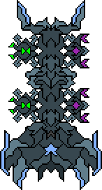

Stalker

El enemigo básico del juego.
Utiliza un cristal para atacar a corta distancia, el cual causa daño al jugador mientras se encuentre cerca de este.
Al ser destruido hay una probabilidad de el cristal permanezca intacto por un breve periodo de tiempo, lo cual provocara que otros enemigos también reciban daño por parte del cristal.
Sniper

Realiza ataques a larga distancia, cargando un rayo de energía el cual paralizara al jugador por unos segundos si es impactado por este.
En caso de que el rayo impacte a un enemigo, este perderá energía totalmente y explotara.
Este siempre intentara mantenerse alejado del jugador, por lo cual huira si el jugador se acerca demasiado.
Repulsor
Si se encuentra demasiado cerca del jugador utiliza una habilidad que crea una onda de fuerza de corto alcance que empuja todo objeto que este frente de el.
Si el jugador se encuentra dentro del rango de la onda de fuerza entonces sufrirá daño.
Lanzador
Ataca al jugador lanzando un solo objeto hacia el, una vez el objeto sea lanzado (o en caso de que este sea destruido) este enemigo escapara del mapa.
Para lanzar el objeto se tiene que mantener contacto visual con el jugador durante un breve periodo de tiempo,
después de esto el Lanzador permanecerá inmóvil durante un segundo para lanzar el objeto.
Lanza-Drones

Enemigo estacionario el cual una vez se encuentre en su posición objetivo desplegará drones enemigos cada cierto tiempo.
Tiene un limite de despliegue de 2 drones de cada tipo activos al mismo tiempo.
Dron Hacker
Al estar a una corta distancia del jugador este atacará invirtiendo los controles de movimiento.
Multiples drones de este tipo pueden atacar al jugador al mismo tiempo, por lo cual es posible que el efecto sea anulado al invertir controles
de movimiento que ya se hayan sido invertidos previamente.
Dron Inmovilizador
Al estar a una corta distancia del jugador este atacará reduciendo ligeramente la velocidad de movimiento.
Multiples drones de este tipo pueden atacar al jugador al mismo tiempo, por lo cual la velocidad de movimiento se vera reducida en medida
de la cantidad de drones inmovilizadores que se encuentren cerca del jugador.